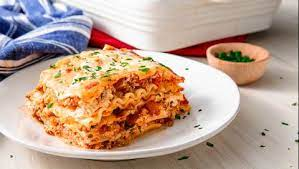

lasagna

Description
Lasagna is a wide, flat sheet of pasta. Lasagna can refer to either the type of noodle or to the typical lasagna dish which is a dish made with several layers of lasagna sheets with sauce and other ingredients, such as meats and cheese, in between the lasagna noodles.
ingredients
- Lasagna sheets 250g
- Parmesan cheese
- 2 tbsp olive oil
- 1 onion
- 1 carrot
- 1 clove of garlic
- 500g beef mince
- 5 tbsp tomato paste
- 2x400g canned tomatoes
- 2 cups chicken stock
- salt and pepper
- pinch of nutmeg
- 2 tbsp butter
- 2 tbsp plain flour
- 2 cups milk
- 125g mozzarella cheese
Steps
- Preheat oven to 180ºC
- To make the meat sauce, heat oil in a saucepan. Add onion, carrot and garlic, cook until soft. Add beef mince, cook until brown
- Stir in tomato paste, canned tomatoes and chicken stock. Season with salt, pepper and nutmeg. Cover and simmer gently for 20 minutes, stirring occasionally
- To make the cheese sauce, melt butter in a separate saucepan, stir in flour and cook for 2 minutes over gentle heat
- Remove from heat and gradually stir in the milk. Return to heat, and continue to stir until thick and smooth
- Season with salt, pepper and add mozzarella or cheddar cheese, stirring over low heat until cheese melts
- To assemble the lasagna, pour ½ cup of the meat sauce into a lightly greased baking dish. Alternate layers of lasagna, meat and cheese sauces, ending with cheese sauce layer (allow for 4 layers)
- Sprinkle with grated parmesan cheese and bake for 35-40 minutes or until cooked through (test if cooked by pricking with a fork)
- Allow lasagna to stand for 5-10 minutes before serving
- Serve and enjoy with family and friends!